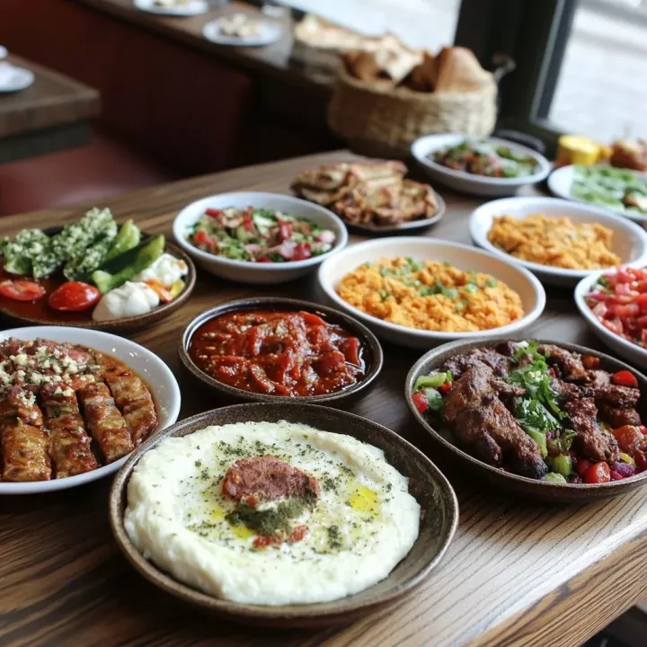

Ağrı Dağı
Türkiye'nin en yüksek dağı olan Ağrı Dağı 5137 metre yüksekliğe sahiptir. Sönmüş bir volkandır ve Türkiye'nin en önemli doğal simgelerinden biridir.
Türkiye'nin Doğal ve Tarihi Güzellikleri
Türkiye'nin en yüksek dağı olan Ağrı Dağı 5137 metre yüksekliğe sahiptir. Sönmüş bir volkandır ve Türkiye'nin en önemli doğal simgelerinden biridir.

Abdigör Köftesi, Ağrı Yaprak Döneri, Haşıl ve Katmer gibi yöresel yemekleriyle Ağrı mutfağı oldukça zengindir.